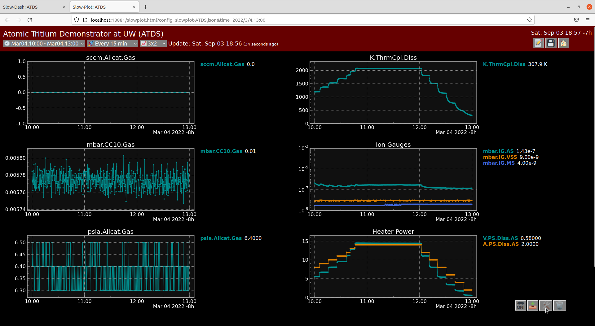
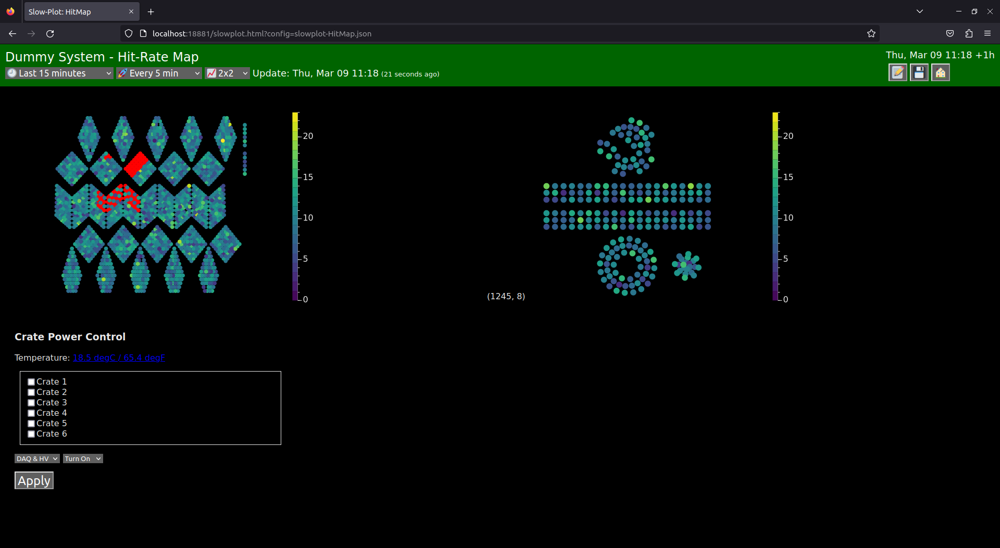
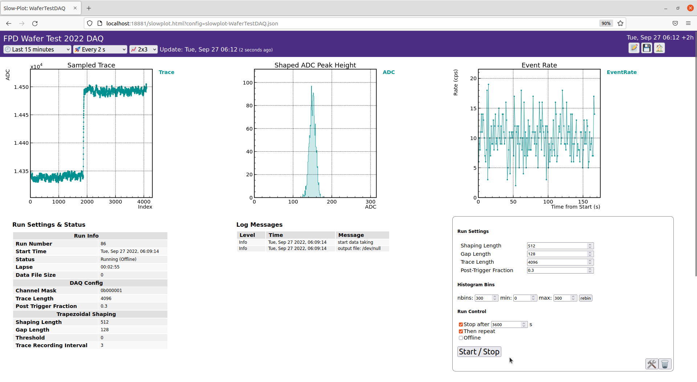
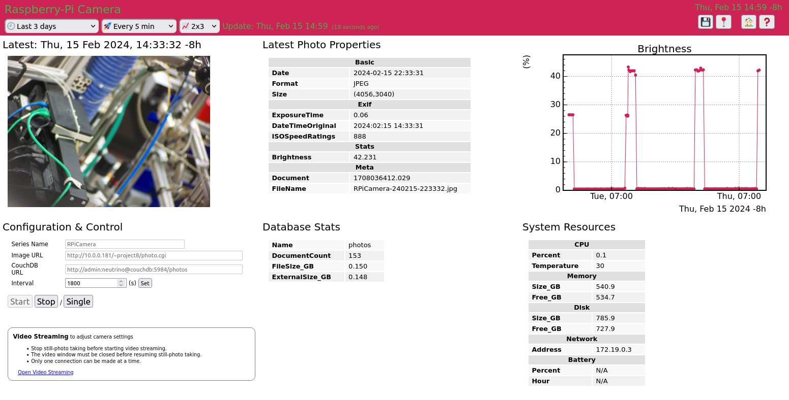

Originally for Slow-controls Dashboard. Now it can do much more.
 Dashboard (Canvas):
Dashboard (Canvas): current status is summarized with color, digits and history plots, on user base image. Control boxes can be added. Configuration by a user YAML file.

Plot Panels, in Dark Theme: plots for time-series data stored on user database (SQL, InfluxDB, MongoDB, ...) can be quickly visualized with mouse clicks.
 RGA Control System:
RGA Control System: Server-side user Python module is used to propagate Slow-Dash user operations to the RGA device. Spectrum data is stored in CouchDB.

Map View is a visualization of a graph object in a schematic way. Data element shapes are described by a user CSV file of x,y,r (simple) or a user SVG file with mapping keys in SVG elements (fully flexible).

Waveform Digitizer DAQ: Server-side user Python module connects SlowDash to a DAQ system, for run controls, configuration and status monitoring, with real-time visualization of streaming data (histograms etc) through Redis.

Camera control and image store: Small user Python module takes pictures regularly and stores them onto CouchDB. Time-series of photos can be browsed as a blob data.